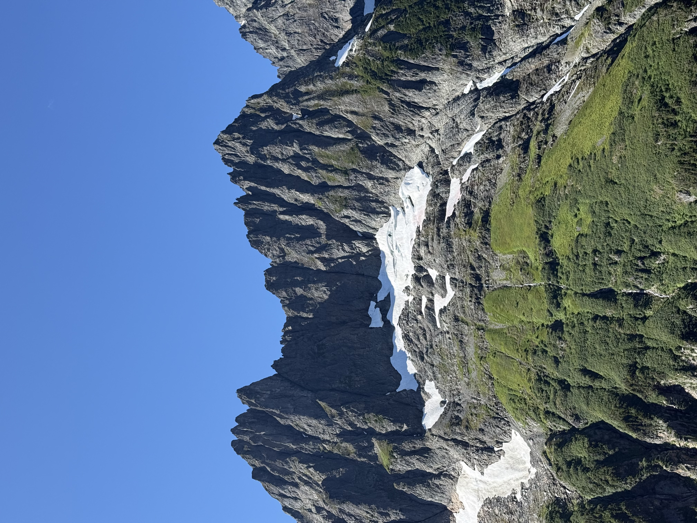
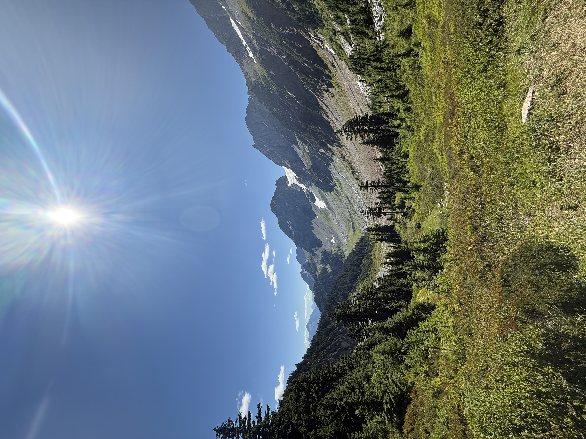
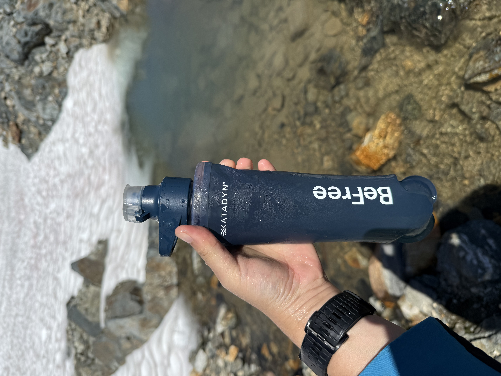

This classic North Cascades route is a demanding 12-mile round trip with about 4,000 feet of elevation gain. From Cascade Pass, the trail climbs through wildflower meadows and across talus slopes to Sahale Glacier Camp. Along the way, you’ll traverse alpine ridges, pass turquoise lakes, and take in sweeping views of peaks like Forbidden, Boston, and Eldorado.





